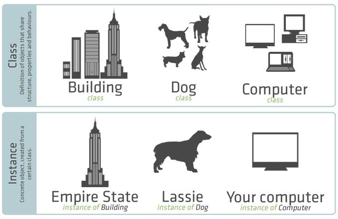

Classes & Objects in PHP
-->Object Oriented Programming(OOP) is a programming style that is intended to make thinking about programming closer to thinking about the real world
-->Objects are created using classes, which are the focal point of OOP. The class describes what the object will be, but is separate from the object itself. In other words, a class can be thought of as an object's blueprint, description, or definition
ex:

-->You can use the same class as a blueprint for creating multiple different objects.
----------------------------------------------------------
PHP Classes
in PHP, a class can include member variables called properties for defining the features of an object, and functions, called methods, for defining the behavior of an object. A class definition begins with keyword class, followed by a class name.
ex:
class Person{
public $age;//property
public function speak(){//method
echo "Hi!";
}
}
-->A valid class name starts with a letter or underscore, followed by any number of letters, numbers, or underscores.
-->The public keyword specifies that the member can be accessed from anywhere in the code.
----------------------------------------------------------
PHP Objects
-->The process of creating an object of a class is called instantiation
-->To instantiate an object of a class, use the keyword new,
$bob = new Person();
-->To access the properties and methods of an object, use the arrow (->)
echo $bob->age;
ex:
class Person{
public $age;
function speak(){
echo "Hi!";
}
}
$p1 = new Person(); //instantiate an object
$p1->age = 23;//assignmet
echo $p1->age;//23
$p1->speak();//Hi!
----------------------------------------------------------
$this
$this is a pseudo-variable that is a reference to the calling object. when working within a method use $this in the same way you would use an object name outside the class
ex:
class Dog{
public $leg=4;
public function display(){
echo $this->legs;
}
}
$d1 = new Dog();
$d1->display();//4
$d2 = new Dog();
$d2->legs = 2;
$d2->display();//2
----------------------------------------------------------
PHP Class Constructor
-->PHP provides the constructor magic method __construct(), which is called automatically whenever a new object is instantiated
class Person{
public function__construct(){
echo "Object created";
}
}
$p = new Person();
-->The __construct() method is often used for any initialization that the object may need before it is used. Parameters can be included in __construct() to accept values when the object is created for example:
class Person{
public $name;
public $age;
public function__construct($name,$age){
$this->name = $name;
$this->age = $age;
}
}
$p = new Person("David",42);
-->You can't write multiple __construct() methods with different numbers of parameters
----------------------------------------------------------
PHP Class Destructor
-->Similar to the class constructor, there is a destructor magic method __destruct(), which is automatically called when an object is destroyed
class Person{
public function__destruct(){
echo "Object destroyed";
}
}
$p = new Person();
-->Destructors are useful for performing certain tasks when the object finishes its lifecycle. For example, release resources, write log files, close a database connection, and so on. PHP releases all resources when a script finishes its execution.
----------------------------------------------------------
PHP Class Inheritance
-->Classes can inherit the methods and properties of another class. The class that inherits the methods and properties is called a subclass. The class a subclass inherits from is called the parent class
ex:
class Animal{
public $name;
public function hi(){
echo "Hi from Animal";
}
}
class Dog extends Animal{
}
$d = new Dog();
$d->hi();
-->Parent constructors are not called implicity if the subclass defines a constructor. However, child does not define a constructor then it will be inherited from the parent class if it's not declared private
----------------------------------------------------------
PHP Visibility
Visibility controls how and from where properties and methods can be accessed
public: to specify that a property/method is accessible from anywhere
protected: makes members accessible only within the class itself, by inheriting, and by parent classes
private: Makes members accessible only by the class that defines them
-->Class properties must always have a visibility type. Methods declared without any explicit visibility keyword are defined as public
Protected members are used with inheritance
private members are used only internally in a class
----------------------------------------------------------
PHP Interfaces
-->An interface specifies a list of methods that a class must implement. However, the interface itself does not contain any method implementations. This is an important aspect of interfaces because it allows a method to be handled differently in each class that uses the interface
-->The interface keyword defines an interface
-->The implements keyword is used in a class to implement an interface
For example, AnimalInterface is defined with a declaration for the makeSound() function, but it isn't implemented until it is used in a class:
<?php
interface AnimalInterface{
public function makeSound();
}
class Dog implements AnimalInterface {
public function makeSound(){
echo "Woof!<br />";
}
}
class Cat implements AnimalInterface{
public function makeSound(){
echo "Meow!<br />";
}
}
$myObj1 = new Dog();
$myObj1->makeSound();
$myObj2 = new Cat();
$myObj2->makeSound();
?>
-->A class can implement multiple interfaces. More than one interfaces can be specified by separating them with commas. For example:
class Demo implements AInterface,BInterface,CInterface{
// Functions declared in interfaces must be defined here
}
-->An interface can be inherit another interface by using the extends keyword
-->All the methods specified in an interface require public visibility
---------------------------------------------------------
PHP Abstract Classes
-->Abstract classes can be inherited but they cannot be instantiated, They offer the advantage of being able to contain both methods with definitions and abstract methods that aren't defined until they are inherited
-->A class inheriting from an abstract class must implement all the abstract methods
-->The abstract keyword is used to create an abstract class or an abstract method.
<?php
abstract class Fruit{
private $color;
abstract public function eat();
public function setColor($c){
$this->color = $c;
}
}
class Apple extends Fruit{
public function eat(){
echo "Omnomnom";
}
}
$obj = new Apple();
$obj->eat();
?>
-->Abstract functions can only appear in an abstract class.
---------------------------------------------------------
The static Keyword
-->The PHP static keyword defines static properties and static methods. A static property/method of a class can be accessed without creating an object of that class
-->A static property or method is accessed by using the scope resolution operator:: between the class name and the property/method name
<?php
class myClass{
static $myStaticProperty = 42;
}
echo myClass::$myStaticProperty;
?>
-->The self keyword is needed to access a static property from a static method in a class definition
<?php
class myClass{
static $myProperty = 42;
static function myMethod(){
echo self::$myProperty;
}
}
myClass::myMethod();
?>
-->Objects of a class cannot access static properties in the class but they can access static methods.
---------------------------------------------------------
The final keyword
-->The PHP final keyword defines methods that cannot be overridden in child classes. Classes that are defined final cannot be inherited
<?php
class myClass{
final function myFunction(){
echo "Parent";
}
}
//ERROR because a final method cannot be overriden in child classes.
class myClass2 extends myClass{
function myFunction(){
echo "Child";
}
}
?>
-->The following code demonstrates that a final class cannot be inherited:
<?php
final class myFinalClass{
}
//ERROR because a final class cannot be inherited
class myClass extends myFinalClass{
}
?>
-->Unlike classes and methods, properties cannot be marked final